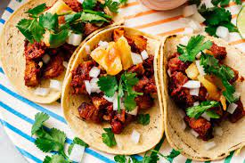

Tacos al Pastor

Description
Easy, homemade Tacos Al Pastor perfect for your weeknight dinners, special occasions, get togethers or game day parties. Made with pork shoulder marinated in the most delicious restaurant-style, flavorful marinade that’s earthy, citrusy and slightly spicy! The meat is perfect for tacos, burritos, quesadillas, enchiladas and more.
Ingredients
- Pork Shoulder
- Guajillo Chiles
- Achiote Paste
- Cumin
- Pepper
- Cinnamon
- Oregano
- Salt
- Orange Juice
- Onion
- Lime Juice
Steps
- Prepare the pork. Using a sharp knife, cut the pork into thin ¼ inch slices. Place the pork slices in a large bowl.
- Prep the peppers. Add the guajillo chiles to a pot with boiling water. Cover with lid and let them soak for about 5 minutes until they begin to soften. Transfer the chiles to a cutting board and carefully remove the seeds and stems. Set aside. I recommend using gloves.
- Make the marinade. To a blender add the dried chiles, orange juice, lime juice, onion, cinnamon, pepper, Mexican oregano, cumin and salt. Blend everything together until it forms a smooth paste. If the paste is too thick, add a bit of the hot water that you used to soak the chiles and blend it in until combined.
- Marinate the meat. Pour the marinade over the pork and mix everything thoroughly together. Cover the bowl with plastic wrap and refrigerate for at least 4 hours to overnight.
- Grill option Preheat your grill to medium-high heat and lightly grease it. Grill the meat for about 7 to 8 minutes per side or until slightly charred. An instant-read meat thermometer inserted into the center of the largest piece should read at least 145°F. Transfer the pork to a platter or baking sheet and grill the pineapple slices on both sides until slightly charred about 5 minutes per side.
- Oven option. Preheat the oven to 450°F. Line a baking pan that is narrower than your skewers with aluminum foil. You want to be able to prop your skewers on the baking sheet while cooking. A 9×13 inch pan usually works great if you’re using 12-inch skewers.
- Make the skewers. Take one piece of pork and thread onto two skewers. Repeat with more meat until there’s about 1½ inches left at both ends of the skewers. Prop this onto the prepared baking pan. Repeat with remaining meat and skewers.
- Finish and Cook. Drizzle the top of the meat with some olive oil. Transfer the pan to the oven and bake for about 30 minutes or until the surface of the meat browns and you can see some charred bits. Might need to turn the broiler on for more charred bits. During the cooking process baste the meat with juices from pan.
- Cut the meat. Let the cooked meat rest for 5 minutes before cutting it up into bite size pieces.
- Assemble the tacos and serve. Serve on tacos with grilled pineapple, fresh cilantro, red onion, salsa, and lime wedges.